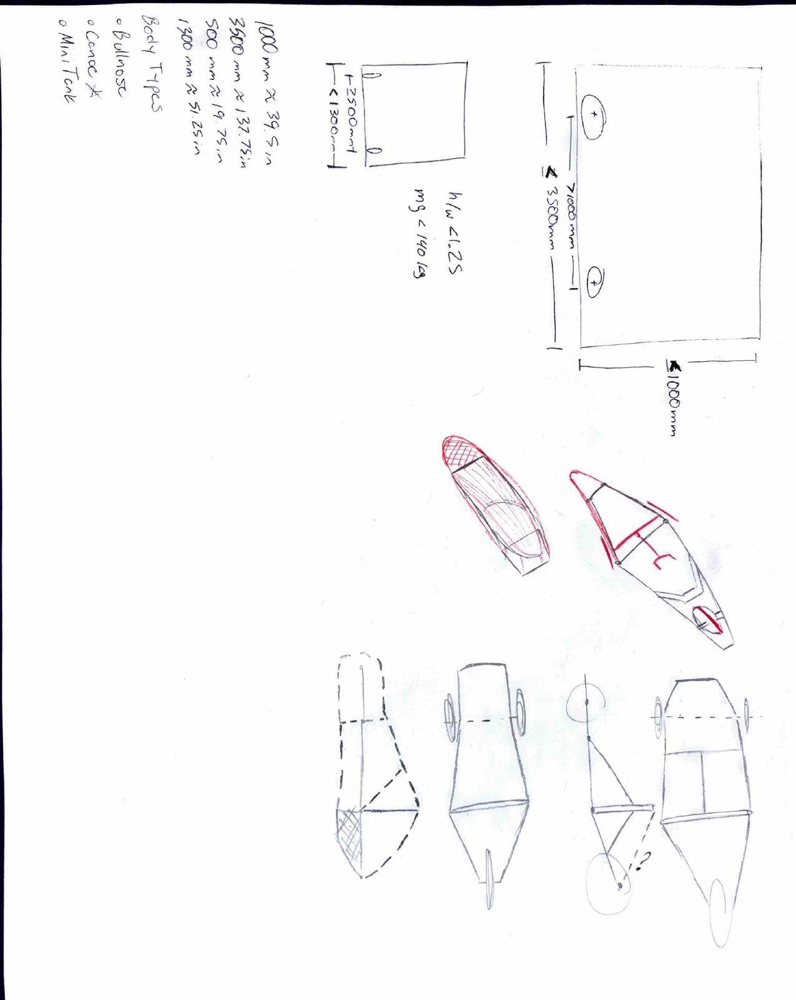

Shell Eco-Marathon Chassis Development
Junior Frame Lead — Structural Design, Modeling, and Vehicle Dynamics Integration
Leadership Role
For the current competition cycle I serve as Frame Lead for the Junior Team at JMU — responsible for chassis layout, structural validation, and integration with suspension, powertrain, and body systems. This role involves technical decision-making, design review with senior members, and establishing analysis workflows for future teams.
Early Concept Development
Below are early hand sketches exploring packaging and structural layout concepts prior to CAD development.


Engineering Objectives
- Deliver a lightweight, structurally efficient frame
- Validate design using FEA and experimental data
- Establish reliable load cases from real-world testing
- Improve stiffness-to-mass ratio over previous designs
- Ensure compatibility with body, drivetrain, and suspension systems
Planned Analysis & Modeling Scope
- Torsional and bending stiffness evaluation
- Braking and cornering load cases
- Powertrain and driver mass distribution
- Joint and mounting interface stress analysis
- Road load modeling using experimental data
All assumptions, boundary conditions, and mesh strategies will be documented to ensure repeatability across team members and competition cycles.
Workflow
- Review senior team chassis and FEA models
- Develop validated load cases
- Create baseline CAD geometry in SolidWorks
- Simplify geometry for analysis
- Run baseline FEA in ANSYS
- Correlate with MATLAB/Simulink road load model
- Iterate for mass and stiffness optimization
- Finalize manufacturable design
Next Steps
- Consult senior team on legacy design choices
- Review historical FEA and test data
- Complete first-pass road load model
- Begin initial CAD chassis layout
- Establish structural benchmarks
This page will be updated with CAD renders, FEA results, and validation data throughout the season.